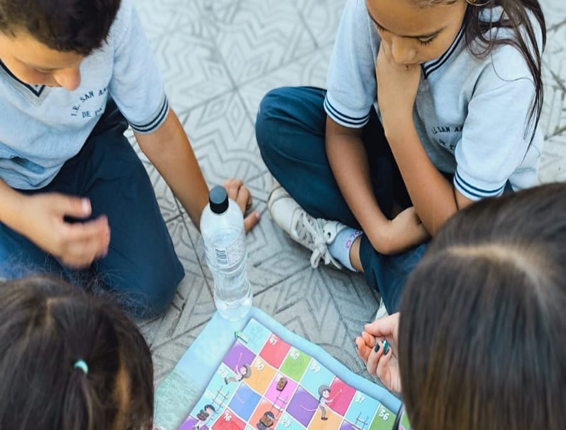
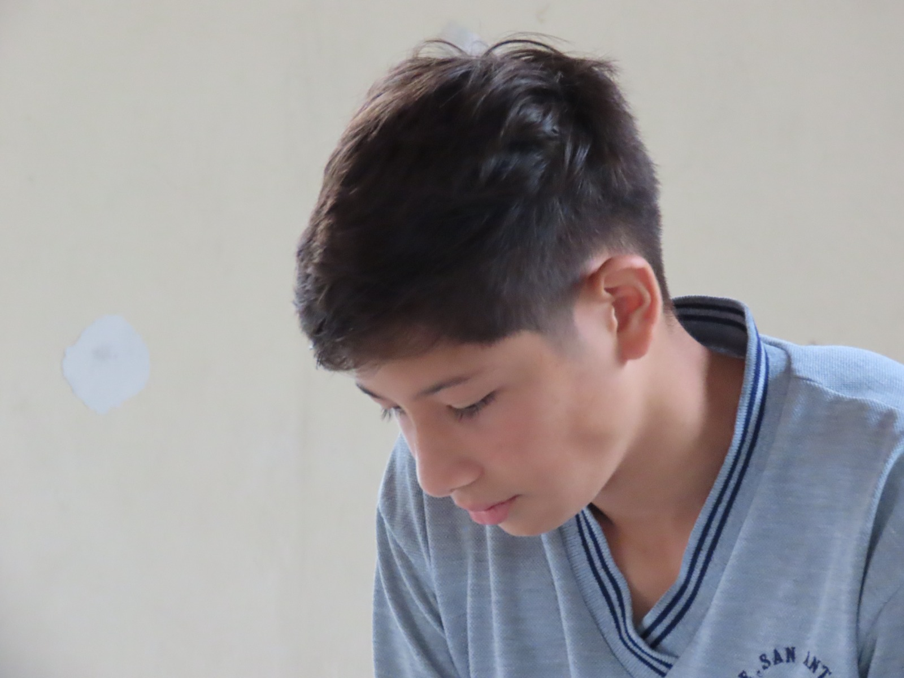
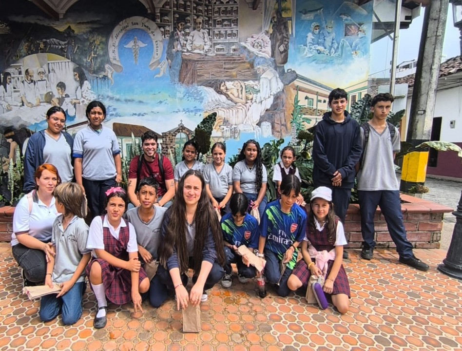

¡Bienvenidos a la Institución Educativa San Antonio de Padua - Támesis! Nuestro objetivo es formar los líderes del futuro y contribuir al desarrollo regional, al municipio de Támesis y al futuro de nuestros estudiantes con una educación de alta calidad reconocida a nivel nacional. Brindamos un entorno de aprendizaje colaborativo, con aulas y grupos diseñados para asegurar la atención personalizada de nuestros docentes altamente calificados. Aquí, los estudiantes desarrollan sus habilidades creativas, investigativas y prácticas en un ambiente que fomenta el crecimiento individual. Descubra más sobre nuestra oferta educativa en nuestro sitio web o contáctenos para más información. ¡Estamos listos para ayudarle a conocer todo lo que podemos ofrecer!
Programa educativo para los niveles de educación básica primaria.

Programa educativo para los niveles de educación media.

Actividades y programas complementarios (Comfama u otros).
